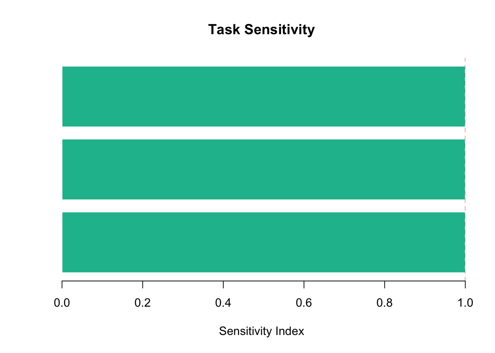

library(PRA)
set.seed(42)3 Who’s Driving? Sensitivity Analysis
“Not all uncertainty is created equal. Some tasks keep you up at night for good reason.”
You’ve run a Monte Carlo simulation and you have a P95 schedule. Now your project sponsor asks: “Which task should we focus on? Where should we spend our mitigation budget?” Looking at the total distribution doesn’t answer that — it just tells you how uncertain the total is. Sensitivity analysis tells you why.
3.1 What Is Sensitivity Analysis?
Sensitivity analysis answers the question: “If I could reduce uncertainty in one task, which task would have the greatest effect on total project variance?”
The answer is not always the task with the longest expected duration. A short task with extremely high variance — say, a procurement step that might take anywhere from 1 to 20 weeks — can dominate the project’s total uncertainty even though its mean duration is modest.
3.1.1 Variance Decomposition
For a project with \(n\) independent tasks, total variance is simply the sum of individual variances:
\[\sigma^2_\text{total} = \sum_{i=1}^n \sigma^2_i\]
When tasks are correlated, covariance terms appear:
\[\sigma^2_\text{total} = \sum_{i=1}^n \sigma^2_i + 2\sum_{i < j} \text{cov}(i, j)\]
The sensitivity index for task \(i\) quantifies how much its variance — including its covariance with all other tasks — contributes to the total:
\[s_i = 1 + 2 \sum_{j \neq i} \frac{\text{cov}_{ij}}{\sqrt{\sigma^2_i \cdot \sigma^2_j}}\]
For independent tasks, all covariance terms are zero and \(s_i = 1\) for every task — the tasks contribute proportionally to their variance. Positive correlations push dominant tasks’ indices above 1 and amplify them relative to smaller-variance tasks.
TipSensitivity vs. Percentiles
Monte Carlo gives you how bad the total outcome could be (P95 = 38 weeks). Sensitivity analysis gives you which task is responsible (Task B drives 60% of total variance). Use both: percentiles for the headline number, sensitivity for the “where do we focus?” conversation.
3.2 Setup
We use the same three tasks from Chapter 2 — a three-task project with mixed distribution types — so you can see the complementary view.
task_dists <- list(
TaskA = list(type = "normal", mean = 10, sd = 2),
TaskB = list(type = "triangular", a = 5, b = 10, c = 15),
TaskC = list(type = "uniform", min = 8, max = 12)
)3.3 Computing Sensitivity
sens <- sensitivity(task_dists)
sens[1] 1 1 1The output is a named vector — one sensitivity index per task. A higher value means that task’s variance has a larger proportional effect on total project variance.
3.3.1 Interpretation
round(sens / sum(sens) * 100, 1)[1] 33.3 33.3 33.3Expressing the indices as percentages makes the picture clear: Task B (triangular) carries the largest share of total project variance. This is the task where mitigation effort pays off most.
3.4 Tornado Chart
A horizontal bar chart sorted by sensitivity index is the standard way to communicate this finding — it’s called a tornado chart because the bars narrow from top to bottom.
sorted_sens <- sort(sens, decreasing = FALSE)
barplot(
sorted_sens,
horiz = TRUE,
names.arg = names(sorted_sens),
xlab = "Sensitivity Index",
main = "Task Sensitivity",
col = "#18bc9c",
border = "white",
las = 1
)
abline(v = 1, lty = 2, col = "#e74c3c")
The dashed red line at \(s = 1\) marks the neutral baseline. Tasks above 1 are amplified by positive correlation with other tasks; tasks below 1 are damped by negative correlation (or simply have lower variance).
3.6 Summary
3.7 Exercises
Reading the chart. In the tornado chart above, which task contributes the least to total variance? What property of its distribution explains this?
Change the spread. Replace Task B’s triangular distribution with
Triangular(8, 10, 12)— a tighter spread. How do the sensitivity indices change? Does Task B still dominate?High-variance newcomer. Add a fourth task, Task D ~
Normal(5, 6)(very high variance relative to its mean). Recompute the sensitivity indices. Does Task D become the dominant driver?Correlation direction. ★ Construct a correlation matrix where Task A and Task B are negatively correlated (−0.5). What happens to their sensitivity indices relative to the independent case? Explain the result in terms of the covariance formula.
From sensitivity to contingency. ★ Run
mcs()on the same three tasks, then runsensitivity(). The task with the highest sensitivity index should also be responsible for the widest spread in the simulation. Verify this by plotting the individual task distributions from the MCS output alongside the sensitivity indices. Do they tell a consistent story?